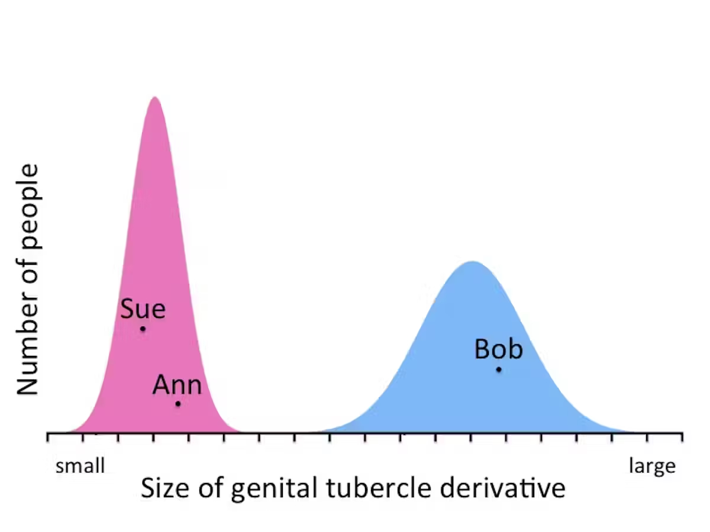
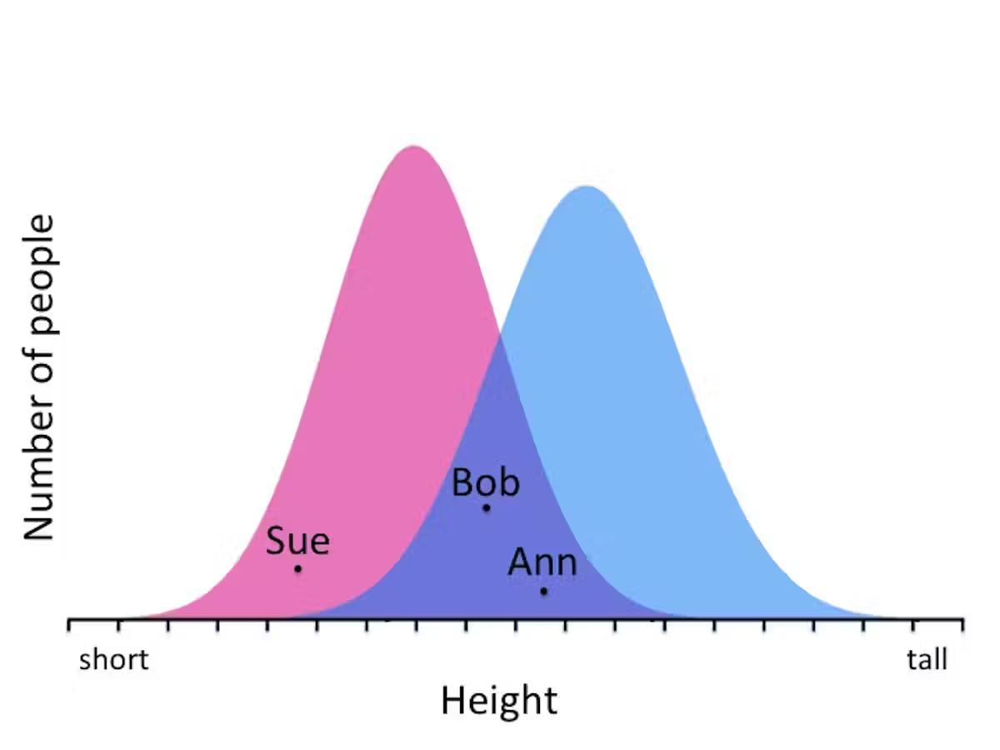
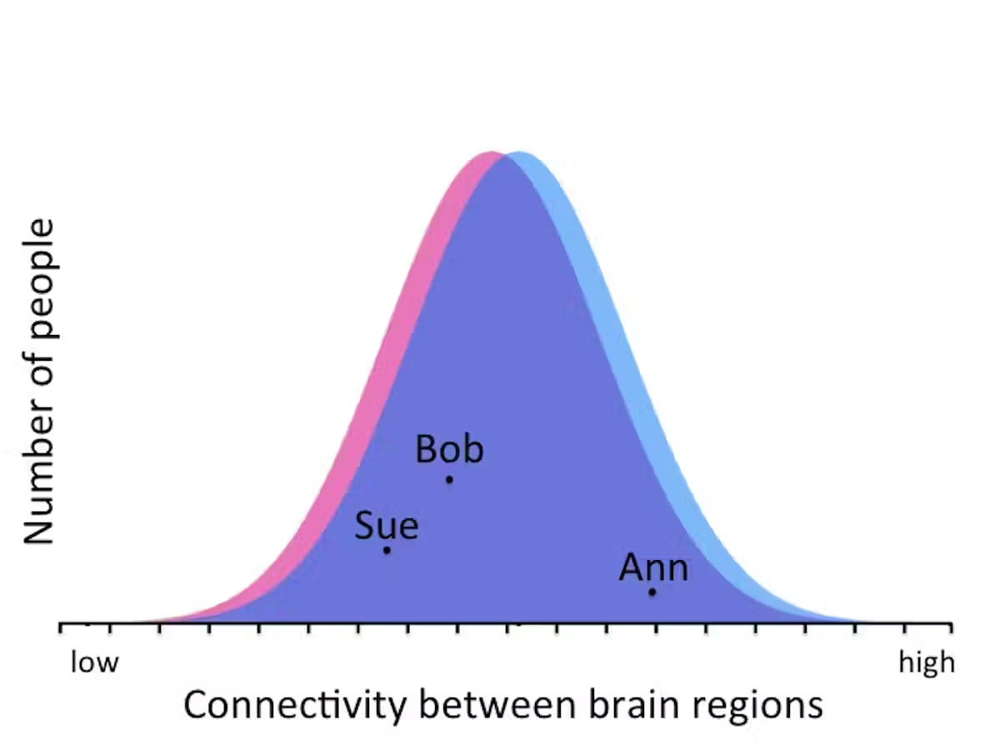
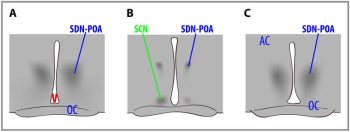

6.3: Sex Differences in Psychology and the Brain
The process of sexual differentiation is relatively well understood for reproductive body parts and behaviors. They are sexually dimorphic, meaning they come in two distinct types—male or female.[1] Conversely, non-reproductive behaviors and body structures, including the brain, vary much more within and across sexes. Structures may differ between males and females on average, but their distributions greatly overlap, and they do not have a distinct male or female form (i.e., are not sexually dimorphic). Thus, sex differences in the brain and behavior are less clear, less well understood, and subject to greater debate.
The uncertainty and contention on sex differences stem from various factors. First, most early animal studies on brain and behavior included only male animals, making it impossible to study sex differences. This only recently changed and now funding agencies generally require that studies include both males and females and address how biological variables such as sex are factored into the research design (Clayton & Collins, 2014; Pinel & Barnes, 2021). Second, sex differences in human psychology can be politically and emotionally charged—given the historical misuse of biological data to justify sexist ideas, some fear that recognizing sex differences could lead to more sexist or discriminatory policies; conversely ignoring biological sex differences due to concerns about sexism may harm health outcomes by hindering the development of optimized sex-specific treatments.
Finally, human studies on sex differences are methodologically challenging; when differences are observed, effects are often small and their causes (biological and/or experiential) remain unclear. For example, a sex difference in the size of a brain region could stem from biological differences linked to the sex chromosomes, exposure to hormones, experiences of developing in a gendered society, and/or interactions among such factors (e.g., hormones or gendered experience could trigger epigenetic modifications, leading to gene expression or silencing that results in sex differences in the brain; Nugent & McCarthy, 2011). Ethical and practical constraints prevent experimental manipulation of variables in humans, while animal models may not generalize to the complexities of human sex differences.
Sex Differences in Psychology
Despite the scientific challenges, understanding sex differences could provide insights into behaviors, cognitive functions, and psychiatric disorders that manifest differently in males and females. The prevalence of several psychiatric conditions differs between males and females. Conditions more common in males include autism spectrum disorder, ADHD, schizophrenia, specific language impairment, and dyslexia. Conditions more common in females include Alzheimer’s disease, anxiety disorders, anorexia nervosa, and depression (Ritchie et al., 2018; Ruigrok et al., 2014).
Sex differences have also been established in cognitive abilities, emotion, personality, and behavior. For example, on average, males perform better on some spatial tasks, such as rotating 3D objects. Males also show higher rates of aggression (Archer, 2004) and risk-taking (Cross et al., 2011). On average, females perform better on some memory tasks such as remembering object identities and faces. Girls outperform boys on some verbal tasks including reading and writing (Miller & Halpern, 2014). Females also score higher on average for tests of empathy, self-reported interest in people versus things, and the personality trait agreeableness (Christov-Moore et al., 2014; Ritchie et al., 2018).
It’s crucial to note that these differences represent average tendencies, and there is substantial overlap in performance for males and females on all these measures. In sum, several psychological phenomena differ between males and females and these differences likely arise from many biological and environmental factors. Investigating sex differences in the brain may provide insight into these psychological patterns, enhancing our understanding of cognition and behavior.
Sex Differences in the Brain
Research has identified several differences between male and female brains. Males have larger brains on average than females; with 9-13% greater volume in total brain, white matter, grey matter, and cerebrospinal fluid (Ruigrok et al., 2014). These overall size differences might be unsurprising, as males also have bigger bodies, hearts, lungs, feet, etc. Despite smaller brains, females have greater cortical thickness throughout most of the brain (Ritchie et al., 2018). Differences in volume occur in some brain regions.
An MRI study of over 5000 English adults found males had larger volumes in many subcortical regions, including the amygdala (involved in emotion and threat detection), hippocampus (involved in memory and spatial processing), and the nucleus accumbens (involved in reward processing). These sex differences persisted when controlling for height, but were less pronounced when controlling for total brain volume (Ritchie et al., 2018).
Recent debates challenge the extent of sex differences in the brain. Eliot et al. (2021) argue that when properly controlling for brain volume, sex-related differences in specific regions become limited and weak, and conclude that the brain is not sexually dimorphic (i.e., it does not come in a distinct male and female form). Most researchers would reject the extreme binary concept of ‘sexually dimorphic’ brains. However, a meta-analysis that considered the methodological quality of studies found “highly reproducible sex differences in regional brain anatomy” beyond overall brain size. These sex differences are in the mean value of largely overlapping distributions, and they show small-to-moderate effect sizes (DeCasien et al., 2022).
The causal factors (biology versus experience) shaping sex differences in the brain continues to be a crucial area of scientific inquiry. Sex differences in the brain were most apparent in “mature” age participants (ages 18-59) (Ruigrok et al., 2014); and in the large English study, participants averaged 62 years of age (Ritchie et al., 2018). This raises the question of whether observed sex differences primarily result from long-term exposure to gendered societal experiences rather than innate biological factors such as hormones or genes.
However, some sex differences exist at birth, before gendered experience. Newborn males have 6% larger brains and more neocortical neurons than females, even when controlling for birth weight. Region-specific differences are also present: males have a larger medial temporal cortex (involved in sensory processing), while females have greater grey matter volume in the temporal-parietal junction (involved in social cognition) (Gilmore et al., 2018). These differences that developed before birth may relate to brain function later in life.
For an interesting overview, see the debate between Profs. Gina Rippon and Simon Baron-Cohen on sex differences and whether the brain is gendered. Video link. Podcast link.
Size and Distribution of Sex Differences
Although reliable sex differences exist in human brains and psychological phenomena, the effect sizes are typically small to moderate and there is more variation within each sex than between sexes. Figure 7 (adapted from Maney, 2016) illustrates this concept by plotting male and female distributions for three traits.
Figure 7a shows external genitalia size, a sexually dimorphic trait with distinct male and female ranges (data from Wallen & Lloyd, 2008, Maney 2016). In this sample, all measurements from the females fall in one range, and all males fall in a separate range. So based on this trait, females and males could be accurately categorized (with only rare exceptions).

As shown in Figure 7b, height differs between males and females on average, but the distributions overlap considerably, and many females are taller than many males. If you only know someone’s height, you cannot accurately categorize them as male or female.

Figure 7c plots connectivity between brain regions, a small but reliable sex difference in the brain (data from Tunç et al., 2016). If you only knew someone’s brain connectivity, you would correctly guess their sex about 51% of the time (Maney, 2016). This is only slightly above chance but reflects a reliable sex difference. Small differences can be important, but should be interpreted cautiously.

Given the considerable overlap in distributions of brain regions that show sex differences, human brains cannot be categorized into two distinct classes: “male brain” or “female brain.” Very few brains feature all male-associated regions or all female-associated regions. Human brains exist along a spectrum of traits associated with sex. Joel and colleagues (2015) thus proposed the concept of the “mosaic brain”, wherein “most brains are comprised of unique ‘mosaics’ of features, some more common in females compared with males, some more common in males compared with females, and some common in both females and males.”
While humans cannot look at a brain and accurately categorize it as male or female, recent artificial intelligence approaches can. Machine learning algorithms simultaneously using many features of the brain “mosaic”, can successfully identify whether a brain is from a male or female with over 90% accuracy (Ryali et al., 2024).
Brains and Hormones
Many causal factors can shape sex differences in the brain, including genetic encoding on the sex chromosomes, experience, and hormones (DeCasien et al., 2022; Ruigrok et al., 2014). We conclude this section with two examples of hormonal influences on sex differences in brain and behavior.
In rats, a region of the hypothalamus, the sexually dimorphic nucleus of the Preoptic Area (SDN-POA), is (as its name indicates) sexually dimorphic—it is 2.6 times larger in males than females. It is involved in reproduction. Lesioning it completely disrupts a male rat’s ability to engage in sexual behavior. Experiments demonstrate that exposure to gonadal steroid hormones during early development have an “organizing” effect on this brain structure. Exposure to testosterone (which is converted to estradiol) or estradiol causes masculinization of the brain. Figure 8 shows the SDN-POA (dark cell bodies) in a male (left), a female (center), and a female treated with testosterone as a newborn (right). The SDN-POA of the untreated male is substantially larger than the untreated female, but is equal in size to the testosterone-treated female. This illustrates how early gonadal hormone exposure dramatically affects brain structure.

In humans, researchers cannot experimentally manipulate hormone levels that a newborn or fetus is exposed to. However, if the fluid in the amniotic sac around the fetus is measured for medical reasons, researchers can also measure the prenatal testosterone levels. Such data show that male fetuses are exposed to more testosterone on average than female fetuses. Interestingly, longitudinal studies have shown that prenatal hormone levels relate to behavior and brain structure many years later. For example, girls with higher levels of prenatal testosterone performed better on a test of mental rotation at age 7 (Grimshaw et al., 1995), and boys with higher levels of prenatal testosterone performed worse on a test of empathy at age 6-8 (Chapman et al., 2006).
Fetal testosterone levels also correlated with the volume of brain regions in a group of 8-11 year olds in a way that was congruent with sex differences observed in those regions (Lombardo et al., 2012). For example, some regions that were generally bigger in males, were also associated with higher levels of prenatal testosterone (and vice versa). While only correlational (and not causal like the rat experiment), these results suggest that prenatal hormone exposure could play some role in organizing brain structure and sex differences in brain and behavior.
Text Attributions
Parts of this section were adapted from:
Nelson, R. J. (2023). Hormones & behavior. In R. Biswas-Diener & E. Diener (Eds), Noba Textbook Series: Psychology. Champaign, IL: DEF publishers. Retrieved from http://noba.to/c6gvwu9m
Media Attributions
- Distribution of genitalia measurements © Donna Maney i is licensed under a CC BY-ND (Attribution NoDerivatives) license
- Height Distribution © Donna Maney is licensed under a CC BY-ND (Attribution NoDerivatives) license
- Brain connectivity distributions © Donna Maney is licensed under a CC BY-ND (Attribution NoDerivatives) license
- dimorphic nuclei © Charles Nelson is licensed under a CC BY-NC-SA (Attribution NonCommercial ShareAlike) license

- As noted throughout the chapter, biological sex cannot always be simplified into a strict two-structure dichotomy; it exists along a continuum, and intersex conditions occur more frequently than many realize. ↵